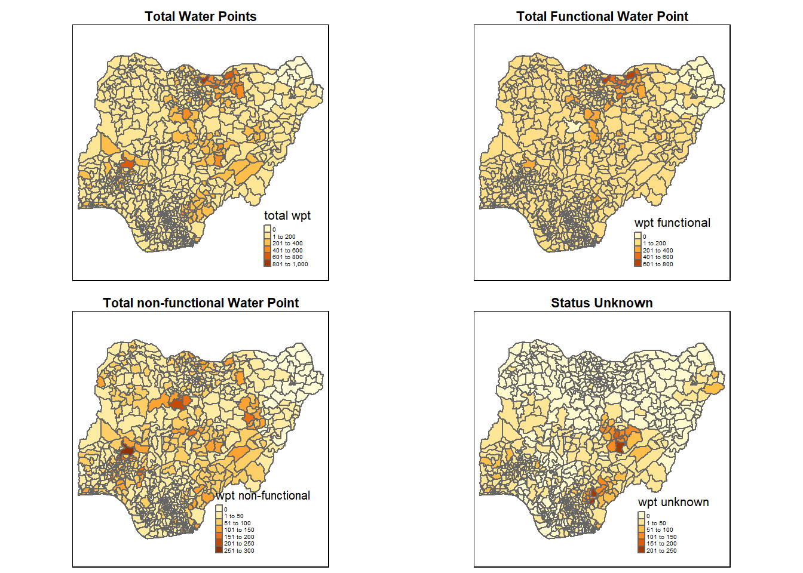
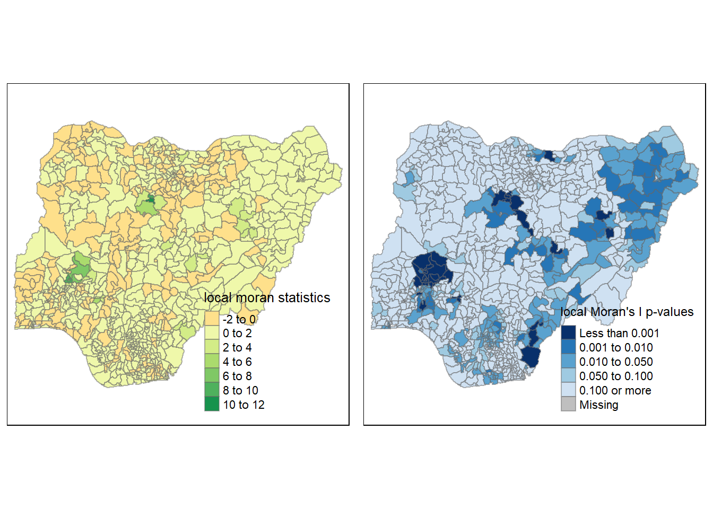
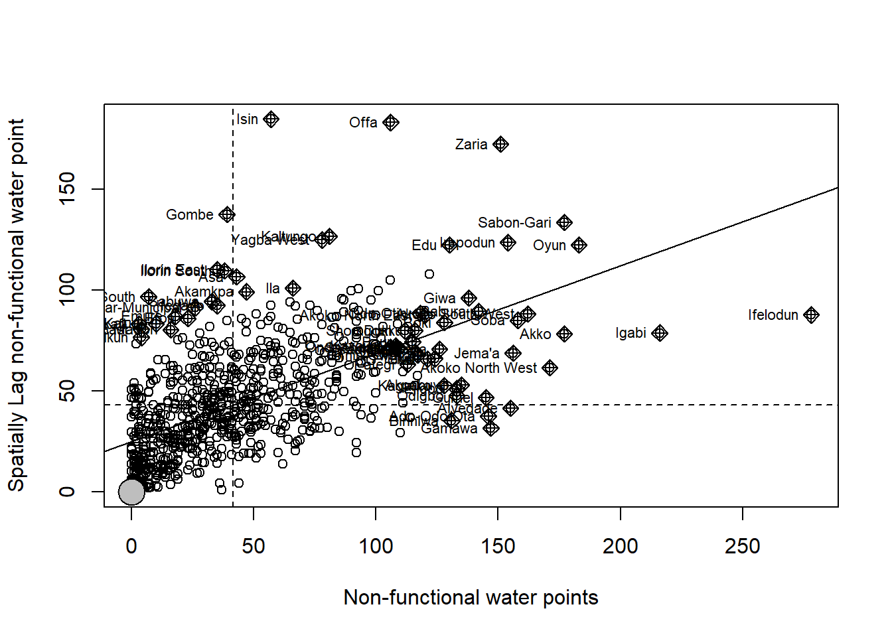
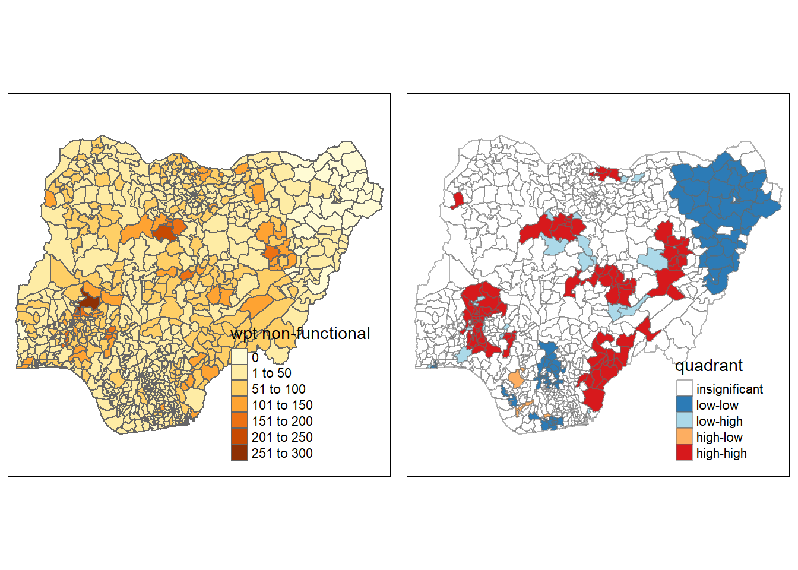
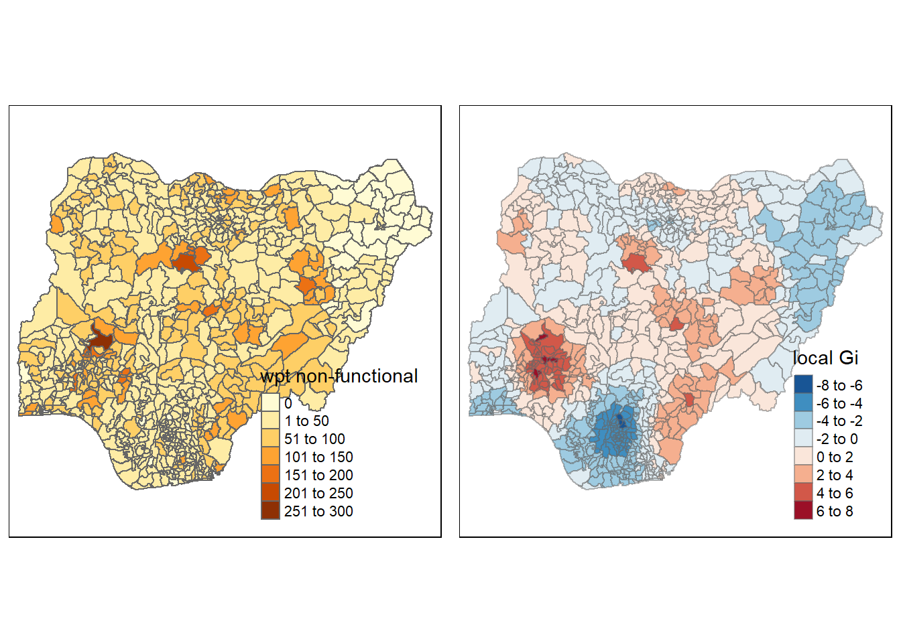
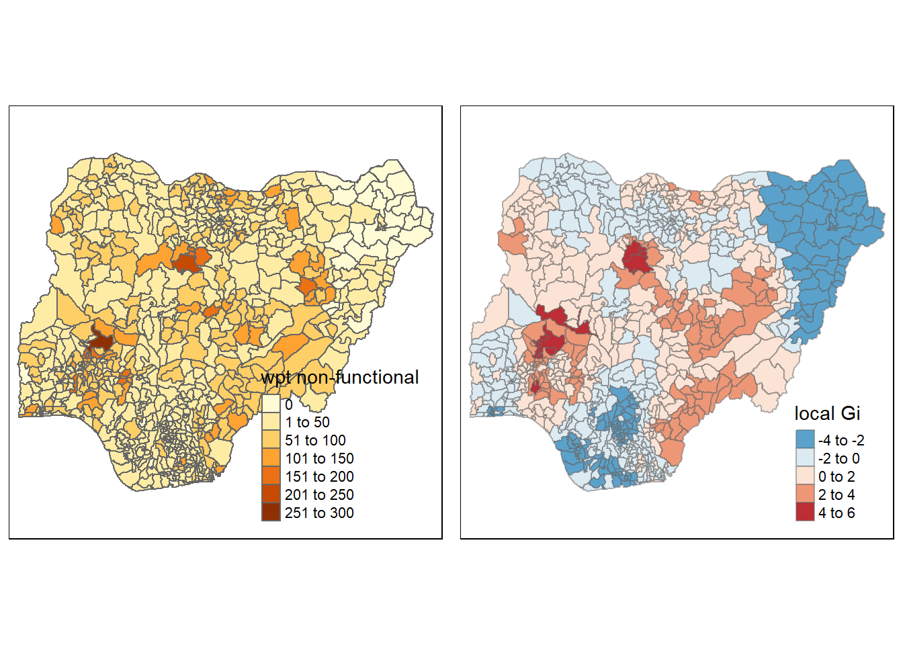

Show the code
pacman::p_load(sf, tidyverse, tmap, spdep, funModeling)Water is an important resource to mankind. Clean and accessible water is critical to human health. It provides a healthy environment, a sustainable economy, reduces poverty and ensures peace and security. Yet over 40% of the global population does not have access to sufficient clean water. The lack of water poses a major threat to several sectors, including food security. Agriculture uses about 70% of the world’s accessible freshwater.
Developing countries are most affected by water shortages and poor water quality. Up to 80% of illnesses in the developing world are linked to inadequate water and sanitation. Despite technological advancement, providing clean water to the rural community is still a major development issues in many countries globally, especially countries in the Africa continent.
Poor access to improved water and sanitation in Nigeria remains a major contributing factor to high morbidity and mortality rates among children under five. The use of contaminated drinking water and poor sanitary conditions result in increased vulnerability to water-borne diseases, including diarrhoea which leads to deaths of more than 70,000 children under five annually.
Geospatial analytics hold tremendous potential to address this complex problem. In this study, we aim to apply appropriate global and local measures of spatial Association techniques to reveal spatial patterns of Not Functional water points.
The R packages we’ll use for this analysis are:
sf: used for importing, managing, and processing geospatial data
tidyverse: a common but important collection of packages for data science tasks
tmap: used for creating thematic maps for spatial data visualisaion, such as choropleth and bubble maps
spdep: provides a collect of functions to create spatial weights matrix objects from polygons and point features.
funModeling will be used for rapid Exploratory Data Analysis
Two data sets will be used in this study:
Nigeria water point data file compiled in WPDx Data Standard from Humanitarian Data Exchange Portal
Nigeria Administraive boundary data WPDx Global Data Repositories
We would start by using st_read() and filter() to import the water point data
Next, we use write_rds() of readr package is used to save the extracted sf data table (i.e. wp) into an output file in rds data format. The output file is called wp_nga.rds and it is saved in data/geospatial/ sub-folder.
Now, we would import the Nigeria LGA Boundary data into our R environment by using the code chunk below
Data wrangling is the process of removing errors and combining complex data sets to make them more accessible and easier to analyze. Due to the rapid expansion of the amount of data and data sources available today, storing and organizing large quantities of data for analysis is becoming increasingly necessary.
When viewing the nga data, we had observed that the data set contains NA values. these values have to be removed in order for us to categorise the values properly. we will be using replace_na() to recoding NA values into string
We can do a quick visual check on the breakdown of the categories using freq(). we can observe that we have 9 different categories in the data set
As this study intends to look at the spatial relationship of water points we would need to identify and filter the correct data from the nga data set. viewing the dataset, we can identify status_cle as the column with the data we need. We would want to separate the water point data into their different categories, importantly, we need to separate between functional and non-functional. we would start by extracting Functional Water Point from wp_nga. This will be done via the filter() function.
#extracting functional waterpoint data
wpt_functional <- wp_nga %>%
filter(status_cle %in%
c("Functional",
"Functional but not in use",
"Functional but needs repair"))
#extracting non-functional water point data
wpt_nonfunctional <- wp_nga %>%
filter(status_cle %in%
c("Abandoned/Decommissioned",
"Abandoned",
"Non-Functional",
"Non functional due to dry season",
"Non-Functional due to dry season"))
#extracing unknown water point data
wpt_unknown <- wp_nga %>%
filter(status_cle == "Unknown")Similarly we do a quick visual check on the breakdown of the categories using freq(). we now have 3 categories under wpt_functional, 5 categories under non-functional and an unknown.
We want to add the new values created into a final data table that we can use for further analysis. we would use the mutate() function to create columns for (1) total water points, (2) functional waterpoints, (3) non-functional wateropint and (4) unknown waterpoints.
nga_wp <- nga %>%
mutate(`total wpt` = lengths(
st_intersects(nga, wp_nga))) %>%
mutate(`wpt functional` = lengths(
st_intersects(nga, wpt_functional))) %>%
mutate(`wpt non-functional` = lengths(
st_intersects(nga, wpt_nonfunctional))) %>%
mutate(`wpt unknown` = lengths(
st_intersects(nga, wpt_unknown)))After the new values had been added into nga_wp, we also want to know whats the percantage of functional vs non-functional water points. this can be done with the follow code chunk. we will also add the values into nga_wp before writing it to nga_wp.rds using write_rds()
Important: Github does not accept file sizes larger than 100 mb. A this point, we had filtered the data from the original 4.8 gb down to 2.1gb. we now need to set all the codes thus far not to evaluate (except the library codes) so that we can delete the large original source files.
After the data is cleaned up, we can finally take a look at how our data look like before moving on to geospatial Autocorrelation. we will be using qtm() and tmap to visualise the data.
nga_wp <- read_rds("data/rds/nga_wp.rds")
total <- qtm(nga_wp, "total wpt") +
tm_layout(main.title = "Total Water Points",
main.title.position = "center",
main.title.size = 0.7,
main.title.fontface = "bold",
legend.outside = FALSE,
legend.stack = "vertical",
legend.text.size =0.30,
legend.title.size=0.8)
wp_functional <- qtm(nga_wp, "wpt functional") +
tm_layout(main.title = "Total Functional Water Point",
main.title.position = "center",
main.title.size = 0.7,
main.title.fontface = "bold",
legend.outside = FALSE,
legend.stack = "vertical",
legend.text.size =0.30,
legend.title.size=0.8)
wp_nonfunctional <- qtm(nga_wp, "wpt non-functional") +
tm_layout(main.title = "Total non-functional Water Point",
main.title.position = "center",
main.title.size = 0.7,
main.title.fontface = "bold",
legend.outside = FALSE,
legend.stack = "vertical",
legend.text.size =0.30,
legend.title.size=0.8)
unknown <- qtm(nga_wp, "wpt unknown") +
tm_layout(main.title = "Status Unknown",
main.title.position = "center",
main.title.size = 0.7,
main.title.fontface = "bold",
legend.outside = FALSE,
legend.stack = "vertical",
legend.text.size =0.30,
legend.title.size=0.8)
tmap_arrange(total, wp_functional, wp_nonfunctional, unknown, asp=1, ncol=2)
We can see from the above that the data set consists of many polygons of uneven sizes and proximity to neighbors. This is relevant for us to determine which weighing method to apply next. The distribution of waterpoints also seem uneven, but it’s too early to be certain. we shall confirm in the subsequent paragraphs.
Geo-spatial autocorrelation refers to the degree to which one object is similar to other nearby objects. “Auto” means self and “correlation” means association. In layman terms, it measures how close objects are similar to other close objects. We would first need to identify the spatial relation and compute the weight matrix before applying a correleation method with the matrix.
A spatial weights matrix quantifies the spatial and temporal relationships that exist among the features in your dataset (or at least quantifies your conceptualization of those relationships). A few weighing methods had been considered for this study. Before we go any further, we should note that our data set is (1) made up of many polygons (>30), (2) varies greatly in Size, (3) varies greatly in no of. neighbors (4) distribution of water points appears skewed from a cursory glance and (5) due to the way we aggregated the data, it is now a polygon data rather than point. Now wth these in mind, we can now consider the different relationships.
Polygon continuity weighing is the simpliest but its not suitable as our polygons are not similar in size
Fixed distance can be considered as it is often a good option for polygon data when there is a large variation in polygon size, however is more preferred if the data is point.
Inverse distance is most appropriate with continuous data or to model processes where the closer two features are in space, the more likely they are to interact / influence each other.
Row standardisation is used to create proportional weights in cases where features have an unequal number of neighbors. Row standardization involves dividing each neighbor weight for a feature by the sum of all neighbor weights for that feature and is recommended whenever the distribution of your features is potentially biased
In this case, inverse distance and row standardization weighing seems to be the most suited for the case we are studying. Between the both of them, Row-standarised weights is preferred due to the simplicity and ease of application and also because we can see that the distribution of the water points is potentially biased. We can always come back and apply the inverse distance method if we find the row standarisation unsuitable or we would like to compare them.
We will not compute the Row Standardised weights which will be used for Cluster and Outlier Analysis later. We would first need to create a queen contiguity weight matrix using poly2nb() with the follow code chunk
Neighbour list object:
Number of regions: 774
Number of nonzero links: 4440
Percentage nonzero weights: 0.7411414
Average number of links: 5.736434
1 region with no links:
86
Link number distribution:
0 1 2 3 4 5 6 7 8 9 10 11 12 14
1 2 14 57 125 182 140 122 72 41 12 4 1 1
2 least connected regions:
138 560 with 1 link
1 most connected region:
508 with 14 linksWe can then use the nb2listw() function from spdep to generate th Row Standardised weight matrix. note that the input of nb2listw() must be an object of class nb and the style indicates the type of method applied. B is the basic binary coding, W is row standardised (sums over all links to n), C is globally standardised (sums over all links to n), U is equal to C divided by the number of neighbours (sums over all links to unity), while S is the variance-stabilizing coding scheme proposed by Tiefelsdorf et al. 1999, p. 167-168 (sums over all links to n).
[1] FALSECharacteristics of weights list object:
Neighbour list object:
Number of regions: 774
Number of nonzero links: 4440
Percentage nonzero weights: 0.7411414
Average number of links: 5.736434
1 region with no links:
86
Weights style: W
Weights constants summary:
n nn S0 S1 S2
W 773 597529 773 285.0658 3198.414Next, we will derive the fixed and adaptive distance weight weight matrix which would be used for our Hotspot and Coldspot analysis later. Fixed distance matrix calculates the distance between a point and neighboring points. in cases where there’ not fixed point data, we would need to first derive a centroid. This can be done using the function st_centroid().
After the coordinates fore the centroid had been derived, we would need to determine cut off distance. but how do we decide what distance to cut off? The distance should be sufficient that all vectors at least have 1 neighbour but nobody is a neighbour of everybody else. to figure this out, we would need to check the summary of distances between the various points using knearneigh().
Min. 1st Qu. Median Mean 3rd Qu. Max.
2.662 12.815 20.242 22.031 27.706 71.661 The summary shows that the maximum distance between neighbors is 71.661km, hence we would use this as the upper boundary of the fixed distance weight matrix.
Now we can finsih computing the fixed distance weight matrix with dnearneigh().
Neighbour list object:
Number of regions: 774
Number of nonzero links: 18112
Percentage nonzero weights: 3.023323
Average number of links: 23.40052 nb2listw() is used to convert the nb object into spatial weights object
Characteristics of weights list object:
Neighbour list object:
Number of regions: 774
Number of nonzero links: 18112
Percentage nonzero weights: 3.023323
Average number of links: 23.40052
Link number distribution:
1 2 3 4 5 6 7 8 9 10 11 12 13 14 15 16 17 18 19 20 21 22 23 24 25 26
5 8 12 21 32 35 33 35 28 36 25 21 19 23 16 14 10 13 15 17 16 11 13 10 6 12
27 28 29 30 31 32 33 34 35 36 37 38 39 40 41 42 43 44 45 46 47 48 49 50 51 52
12 5 16 13 12 7 9 9 12 7 12 15 13 9 10 4 5 4 7 8 8 8 6 5 3 2
53 54 55 56 57 58 59 60 61 62 63 64 65 67 68 70
3 4 5 3 6 5 2 6 4 8 8 4 4 3 1 1
5 least connected regions:
90 112 123 237 670 with 1 link
1 most connected region:
585 with 70 links
Weights style: B
Weights constants summary:
n nn S0 S1 S2
B 774 599076 18112 36224 2614072One of the characteristics of fixed distance weight matrix is that more densely settled areas (usually the urban areas) tend to have more neighbours and the less densely settled areas (usually the rural counties) tend to have lesser neighbours. Having many neighbours smoothes the neighbour relationship across more neighbours.
Neighbour list object:
Number of regions: 774
Number of nonzero links: 6192
Percentage nonzero weights: 1.033592
Average number of links: 8
Non-symmetric neighbours listnb2listw() is used to convert the nb object into spatial weights object
Characteristics of weights list object:
Neighbour list object:
Number of regions: 774
Number of nonzero links: 6192
Percentage nonzero weights: 1.033592
Average number of links: 8
Non-symmetric neighbours list
Link number distribution:
8
774
774 least connected regions:
1 2 3 4 5 6 7 8 9 10 11 12 13 14 15 16 17 18 19 20 21 22 23 24 25 26 27 28 29 30 31 32 33 34 35 36 37 38 39 40 41 42 43 44 45 46 47 48 49 50 51 52 53 54 55 56 57 58 59 60 61 62 63 64 65 66 67 68 69 70 71 72 73 74 75 76 77 78 79 80 81 82 83 84 85 86 87 88 89 90 91 92 93 94 95 96 97 98 99 100 101 102 103 104 105 106 107 108 109 110 111 112 113 114 115 116 117 118 119 120 121 122 123 124 125 126 127 128 129 130 131 132 133 134 135 136 137 138 139 140 141 142 143 144 145 146 147 148 149 150 151 152 153 154 155 156 157 158 159 160 161 162 163 164 165 166 167 168 169 170 171 172 173 174 175 176 177 178 179 180 181 182 183 184 185 186 187 188 189 190 191 192 193 194 195 196 197 198 199 200 201 202 203 204 205 206 207 208 209 210 211 212 213 214 215 216 217 218 219 220 221 222 223 224 225 226 227 228 229 230 231 232 233 234 235 236 237 238 239 240 241 242 243 244 245 246 247 248 249 250 251 252 253 254 255 256 257 258 259 260 261 262 263 264 265 266 267 268 269 270 271 272 273 274 275 276 277 278 279 280 281 282 283 284 285 286 287 288 289 290 291 292 293 294 295 296 297 298 299 300 301 302 303 304 305 306 307 308 309 310 311 312 313 314 315 316 317 318 319 320 321 322 323 324 325 326 327 328 329 330 331 332 333 334 335 336 337 338 339 340 341 342 343 344 345 346 347 348 349 350 351 352 353 354 355 356 357 358 359 360 361 362 363 364 365 366 367 368 369 370 371 372 373 374 375 376 377 378 379 380 381 382 383 384 385 386 387 388 389 390 391 392 393 394 395 396 397 398 399 400 401 402 403 404 405 406 407 408 409 410 411 412 413 414 415 416 417 418 419 420 421 422 423 424 425 426 427 428 429 430 431 432 433 434 435 436 437 438 439 440 441 442 443 444 445 446 447 448 449 450 451 452 453 454 455 456 457 458 459 460 461 462 463 464 465 466 467 468 469 470 471 472 473 474 475 476 477 478 479 480 481 482 483 484 485 486 487 488 489 490 491 492 493 494 495 496 497 498 499 500 501 502 503 504 505 506 507 508 509 510 511 512 513 514 515 516 517 518 519 520 521 522 523 524 525 526 527 528 529 530 531 532 533 534 535 536 537 538 539 540 541 542 543 544 545 546 547 548 549 550 551 552 553 554 555 556 557 558 559 560 561 562 563 564 565 566 567 568 569 570 571 572 573 574 575 576 577 578 579 580 581 582 583 584 585 586 587 588 589 590 591 592 593 594 595 596 597 598 599 600 601 602 603 604 605 606 607 608 609 610 611 612 613 614 615 616 617 618 619 620 621 622 623 624 625 626 627 628 629 630 631 632 633 634 635 636 637 638 639 640 641 642 643 644 645 646 647 648 649 650 651 652 653 654 655 656 657 658 659 660 661 662 663 664 665 666 667 668 669 670 671 672 673 674 675 676 677 678 679 680 681 682 683 684 685 686 687 688 689 690 691 692 693 694 695 696 697 698 699 700 701 702 703 704 705 706 707 708 709 710 711 712 713 714 715 716 717 718 719 720 721 722 723 724 725 726 727 728 729 730 731 732 733 734 735 736 737 738 739 740 741 742 743 744 745 746 747 748 749 750 751 752 753 754 755 756 757 758 759 760 761 762 763 764 765 766 767 768 769 770 771 772 773 774 with 8 links
774 most connected regions:
1 2 3 4 5 6 7 8 9 10 11 12 13 14 15 16 17 18 19 20 21 22 23 24 25 26 27 28 29 30 31 32 33 34 35 36 37 38 39 40 41 42 43 44 45 46 47 48 49 50 51 52 53 54 55 56 57 58 59 60 61 62 63 64 65 66 67 68 69 70 71 72 73 74 75 76 77 78 79 80 81 82 83 84 85 86 87 88 89 90 91 92 93 94 95 96 97 98 99 100 101 102 103 104 105 106 107 108 109 110 111 112 113 114 115 116 117 118 119 120 121 122 123 124 125 126 127 128 129 130 131 132 133 134 135 136 137 138 139 140 141 142 143 144 145 146 147 148 149 150 151 152 153 154 155 156 157 158 159 160 161 162 163 164 165 166 167 168 169 170 171 172 173 174 175 176 177 178 179 180 181 182 183 184 185 186 187 188 189 190 191 192 193 194 195 196 197 198 199 200 201 202 203 204 205 206 207 208 209 210 211 212 213 214 215 216 217 218 219 220 221 222 223 224 225 226 227 228 229 230 231 232 233 234 235 236 237 238 239 240 241 242 243 244 245 246 247 248 249 250 251 252 253 254 255 256 257 258 259 260 261 262 263 264 265 266 267 268 269 270 271 272 273 274 275 276 277 278 279 280 281 282 283 284 285 286 287 288 289 290 291 292 293 294 295 296 297 298 299 300 301 302 303 304 305 306 307 308 309 310 311 312 313 314 315 316 317 318 319 320 321 322 323 324 325 326 327 328 329 330 331 332 333 334 335 336 337 338 339 340 341 342 343 344 345 346 347 348 349 350 351 352 353 354 355 356 357 358 359 360 361 362 363 364 365 366 367 368 369 370 371 372 373 374 375 376 377 378 379 380 381 382 383 384 385 386 387 388 389 390 391 392 393 394 395 396 397 398 399 400 401 402 403 404 405 406 407 408 409 410 411 412 413 414 415 416 417 418 419 420 421 422 423 424 425 426 427 428 429 430 431 432 433 434 435 436 437 438 439 440 441 442 443 444 445 446 447 448 449 450 451 452 453 454 455 456 457 458 459 460 461 462 463 464 465 466 467 468 469 470 471 472 473 474 475 476 477 478 479 480 481 482 483 484 485 486 487 488 489 490 491 492 493 494 495 496 497 498 499 500 501 502 503 504 505 506 507 508 509 510 511 512 513 514 515 516 517 518 519 520 521 522 523 524 525 526 527 528 529 530 531 532 533 534 535 536 537 538 539 540 541 542 543 544 545 546 547 548 549 550 551 552 553 554 555 556 557 558 559 560 561 562 563 564 565 566 567 568 569 570 571 572 573 574 575 576 577 578 579 580 581 582 583 584 585 586 587 588 589 590 591 592 593 594 595 596 597 598 599 600 601 602 603 604 605 606 607 608 609 610 611 612 613 614 615 616 617 618 619 620 621 622 623 624 625 626 627 628 629 630 631 632 633 634 635 636 637 638 639 640 641 642 643 644 645 646 647 648 649 650 651 652 653 654 655 656 657 658 659 660 661 662 663 664 665 666 667 668 669 670 671 672 673 674 675 676 677 678 679 680 681 682 683 684 685 686 687 688 689 690 691 692 693 694 695 696 697 698 699 700 701 702 703 704 705 706 707 708 709 710 711 712 713 714 715 716 717 718 719 720 721 722 723 724 725 726 727 728 729 730 731 732 733 734 735 736 737 738 739 740 741 742 743 744 745 746 747 748 749 750 751 752 753 754 755 756 757 758 759 760 761 762 763 764 765 766 767 768 769 770 771 772 773 774 with 8 links
Weights style: B
Weights constants summary:
n nn S0 S1 S2
B 774 599076 6192 11152 201942As the objective of the study was to uncover spatial patterns of the non-functional water points, we would only be focusing on the non functional water point (wpt non-functional) geospatial feature from here onwards. There are few methods of calculating clusters and outliers with Moran’s I being the most popular one. we would be using Moran’s I to first check on the global
The global Moran’s I test can be carried out by simply applying moran.test. As can be seen from the output, the results are statistically significant and we rejuect the null hypothesis that there the observed spatial pattern of values is equally likely as any other spatial pattern.
Moran I test under randomisation
data: nga_wp$`wpt non-functional`
weights: rswm_q n reduced by no-neighbour observations
Moran I statistic standard deviate = 20.043, p-value < 2.2e-16
alternative hypothesis: greater
sample estimates:
Moran I statistic Expectation Variance
0.433932927 -0.001295337 0.000471516 To be sure of our results, we will use a monte carlo simulation to simulate Moran’s I under the assumption of no spatial pattern. The code chunk below performs permutation test for Moran’s I statistic by using moran.mc() of spdep. A total of 1000 simulation will be performed. We can see that it is still statistically significant
Monte-Carlo simulation of Moran I
data: nga_wp$`wpt non-functional`
weights: rswm_q
number of simulations + 1: 1000
statistic = 0.43393, observed rank = 1000, p-value = 0.001
alternative hypothesis: greaterIt is always a good practice for us the examine the simulated Moran’s I test statistics in greater detail. This can be achieved by plotting the distribution of the statistical values as a histogram by using the code chunk below. We can see that the results are approximiately normally distributed with outliers to the right suggesting that the non-functional water points are clustered.
The Cluster and Outlier Analysis tool locates spatial clusters of features with high or low values given a set of features (Input Feature Class) and an analysis field (Input Field). Additionally, the program finds spatial outliers. For each statistically significant feature, the tool determines a local Moran’s I value, a z-score, a pseudo p-value, and a code designating the cluster type. The statistical significance of the obtained index values is represented by the z-scores and pseudo p-values.
To calculate the local Moran’s I, we can simply use localmoran() function of spdep to compute the values quickly.
Ii E.Ii Var.Ii Z.Ii Pr(z != E(Ii))
1 -0.32365786 -9.995243e-04 1.924638e-01 -0.73547576 0.46204980
2 0.07000542 -4.092463e-05 1.053077e-02 0.68258288 0.49487045
3 1.25819985 -1.627684e-03 4.181728e-01 1.94819847 0.05139122
4 -0.03537489 -5.427505e-05 5.954304e-03 -0.45773361 0.64714384
5 0.01201533 -2.590965e-04 3.988998e-02 0.06145673 0.95099547
6 0.00768085 -1.538445e-07 1.687859e-05 1.86960486 0.06153871localmoran() function returns a matrix of values whose columns are:
Ii: the local Moran’s I statistics
E.Ii: the expectation of local moran statistic under the randomisation hypothesis
Var.Ii: the variance of local moran statistic under the randomisation hypothesis
Z.Ii:the standard deviate of local moran statistic
Pr(): the p-value of local moran statistic
Mapping local Moran I for non-functional water points
next, we can now map the Moran’s I values and p-values using the following code chunk
localMI_nonfun.map <- tm_shape(nga_wp.localMI_nonfun) +
tm_fill(col = "Ii",
style = "pretty",
title = "local moran statistics") +
tm_borders(alpha = 0.5)
pvalue.map <- tm_shape(nga_wp.localMI_nonfun) +
tm_fill(col = "Pr.Ii",
breaks=c(-Inf, 0.001, 0.01, 0.05, 0.1, Inf),
palette="-Blues",
title = "local Moran's I p-values") +
tm_borders(alpha = 0.5)
tmap_arrange(localMI_nonfun.map, pvalue.map, asp=1, ncol=2)Variable(s) "Ii" contains positive and negative values, so midpoint is set to 0. Set midpoint = NA to show the full spectrum of the color palette.
The LISA Cluster Map shows the significant locations color coded by type of spatial autocorrelation. The first step before we can generate the LISA cluster map is to plot the Moran scatterplot.
The Moran scatterplot is an illustration of the relationship between the values of the chosen attribute at each location and the average value of the same attribute at neighboring locations and can be derived by using moran.plot() of spdep.
#the scaling is not working, i'm not sure why
nga_wp$`Z.wpt non-functional` <- scale(nga_wp$`wpt non-functional`) %>%
as.vector
nci <- moran.plot(nga_wp$`wpt non-functional`, rswm_q,
labels=as.character(nga_wp$shapeName),
xlab="Non-functional water points",
ylab="Spatially Lag non-functional water point")
Notice that the plot is split in 4 quadrants. The top right corner belongs to areas that have high GDPPC and are surrounded by other areas that have the average level of GDPPC. This are the high-high locations.
Next, we will now prepare LISA Map by setting up the quardrants
quadrant <- vector(mode="numeric",length=nrow(localMI_nonfun))
nga_wp$`Lag_wpt non-functional` <- lag.listw(rswm_q, nga_wp$`wpt non-functional`)
DV <- nga_wp$`Lag_wpt non-functional` - mean(nga_wp$`Lag_wpt non-functional`)
LM_I <- localMI_nonfun[,1]
signif <- 0.05
quadrant[DV <0 & LM_I>0] <- 1
quadrant[DV >0 & LM_I<0] <- 2
quadrant[DV <0 & LM_I<0] <- 3
quadrant[DV >0 & LM_I>0] <- 4
quadrant[localMI_nonfun[,5]>signif] <- 0Once the quardarant has been decided, we can finally drawing the LISA map using tmap.
nonfunctional <- qtm(nga_wp, "wpt non-functional")
nga_wp.localMI_nonfun$quadrant <- quadrant
colors <- c("#ffffff", "#2c7bb6", "#abd9e9", "#fdae61", "#d7191c")
clusters <- c("insignificant", "low-low", "low-high", "high-low", "high-high")
LISAmap <- tm_shape(nga_wp.localMI_nonfun) +
tm_fill(col = "quadrant",
style = "cat",
palette = colors[c(sort(unique(quadrant)))+1],
labels = clusters[c(sort(unique(quadrant)))+1],
popup.vars = c("")) +
tm_view(set.zoom.limits = c(11,17)) +
tm_borders(alpha=0.5)
tmap_arrange(nonfunctional, LISAmap,
asp=1, ncol=2)
From the LISA Map, we can see that southern border surrounding the centre has a H-H for non-functional water point percentage. these regions should be prioritised for repairs or setting up new water points.
The north east region on the other hand shows a L-L for water point percentage which measn good access to water points.
Beside detecting cluster and outliers, localised spatial statistics can be also used to detect hot spot and/or cold spot areas. The term ‘hot spot’ has been used generically across disciplines to describe a region or value that is higher relative to its surroundings (Lepers et al 2005, Aben et al 2012, Isobe et al 2015).
An alternative spatial statistics to detect spatial anomalies is the Getis and Ord’s G-statistics (Getis and Ord, 1972; Ord and Getis, 1995). It looks at neighbours within a defined proximity to identify where either high or low values clutser spatially. Here, statistically significant hot-spots are recognised as areas of high values where other areas within a neighbourhood range also share high values too.
The analysis consists of three steps:
Deriving spatial weight matrix
Computing Gi statistics
Mapping Gi statistics
Join Gi Values to data frame
Variable(s) "gstat_fixed" contains positive and negative values, so midpoint is set to 0. Set midpoint = NA to show the full spectrum of the color palette.
Variable(s) "gstat_adaptive" contains positive and negative values, so midpoint is set to 0. Set midpoint = NA to show the full spectrum of the color palette.
The output of the Hotspot and coldSpot analysis seems to be in line with what we saw earlier from the LISA maps. we can see tha the area just bordering south of the centre area has a higher clustering of non-functional waterpoints and should be piroritised for repairs. on the other hand, the north eastern side has lower clusters of non-functional water point and could be left as is for the time being.
Geospatial Correlation is an important and useful tool for us to understand complex challenges and derive suitable solutions. the use of clustering outliers analysis allows organisations and governments to understand which areas are more in need of prioritization.
Moving ahead, furture studies could explore correlations between the water points vis a vis other features. for example proximity or distance from water source fo the population in the areas.